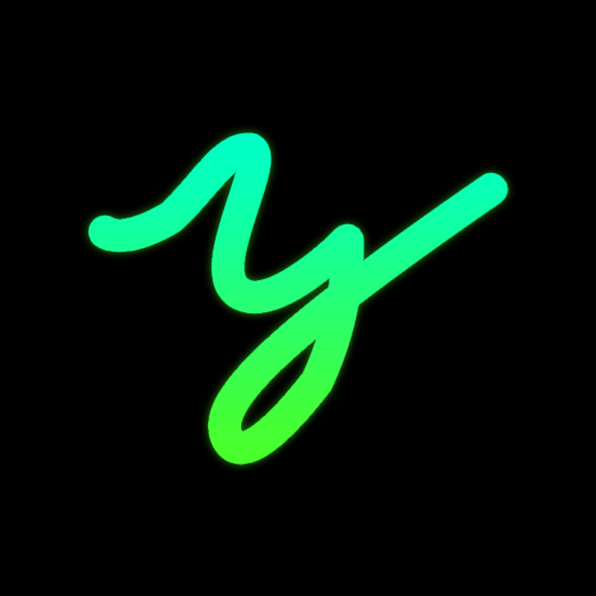

온디바이스 검색·다운로드
yt-dlp + ffmpeg가 앱에 내장되어 서버 없이 YouTube를 검색하고 MP3로 저장합니다. 커버 이미지와 태그까지 삽입됩니다.

yump3YouTube 음악을 기기에서 바로 검색하고, MP3로 저장하고, 재생하세요.
재생목록 통째로 다운로드, 백그라운드 다운로드, 앱 안에서 업데이트까지. 서버도 계정도 필요 없습니다.
yt-dlp + ffmpeg가 앱에 내장되어 서버 없이 YouTube를 검색하고 MP3로 저장합니다. 커버 이미지와 태그까지 삽입됩니다.
재생목록 URL을 붙여넣으면 최대 100곡까지 순차 다운로드하고, 앱에 같은 이름의 플레이리스트를 자동으로 만듭니다.
알림 컨트롤과 대기열을 지원합니다. 화면을 꺼도 음악이 이어집니다.
다운로드 중 알림창에 진행률이 표시되고, 앱을 나가도 계속받습니다. 완료되면 알림으로 알려줍니다.
My Page에서 새 버전을 확인하고 백그라운드로 내려받아 설치합니다. APK를 다시 찾아 헤맬 필요가 없습니다.
자동(최고 VBR), 320, 192, 128 kbps 중에서 고를 수 있습니다. 설정은 다음 다운로드부터 적용됩니다.
다운로드할 때 커버를 jpg로 함께 저장해 플레이어에서 바로(오프라인에서도) 보입니다. 고화질 커버를 우선 사용합니다.
로그인·추적·광고가 없고 모든 데이터는 기기에만 저장됩니다. GPL-3.0으로 전체 소스가 공개되어 있습니다.
아래 버튼을 눌러 yump3.apk를 받으세요.
“알 수 없는 앱 설치”를 허용합니다. (Android 8 이상은 브라우저/파일 앱에 대해 1회 허용)
처음 실행 시 다운로더 준비(초기화·무결성 검사)가 자동으로 진행됩니다.
My Page → 앱 업데이트 → 업데이트 확인. 백그라운드로 받고 알림을 탭하면 설치됩니다.
My Page → 앱 업데이트 → 업데이트 확인을 누르면 새 버전을 확인하고, 백그라운드로 내려받습니다. 알림을 탭하거나 “설치하기” 버튼으로 설치하세요.
네. Home의 “Quick Download Link”에 재생목록 URL을 붙여넣으면 최대 100곡까지 순차 다운로드하고, 같은 이름의 플레이리스트를 자동 생성합니다. 이미 있는 곡은 건너뜁니다.
앱을 열 때 자동으로 yt-dlp를 점검·업데이트합니다. 실패한 항목을 탭하면 상세 오류를 볼 수 있고, Retry로 다시 시도할 수 있습니다. DNS 오류가 반복되면 폰의 Wi-Fi DNS를 8.8.8.8로 바꿔보세요.
My Page → 다운로더 → 다운로드 음질에서 자동(최고 VBR) / 320 / 192 / 128 kbps를 선택할 수 있습니다.
내장 저장소/Android/media/com.yump3/yump3/ 에 제목 [영상ID].mp3 와 커버 .jpg가 저장됩니다. 다른 앱에서 옮긴 MP3는 My Page → 음악 가져오기로 라이브러리에 추가할 수 있습니다.
GPL-3.0. 번들된 youtubedl-android(GPL-3.0) 때문에 앱 전체가 GPL-3.0으로 배포되며, 전체 소스는 GitHub에 공개되어 있습니다.